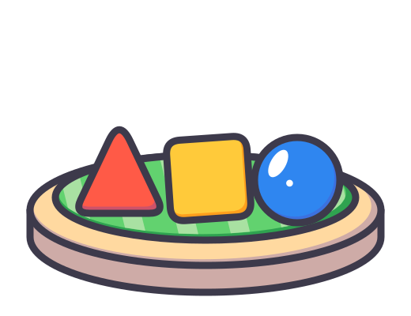
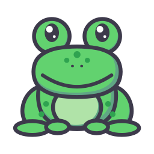
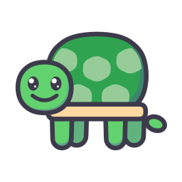

Support
ABC Trails
ABC Trails is an iPhone and iPad app where children aged 3 to 6 learn to write by tracing. Each letter, number and short word has a stroke order that an animated pencil shows first, and the app checks every stroke as the child draws it with a finger or an Apple Pencil. There are no ads, no accounts and no tracking, and the app works without an internet connection.
See it on the App StoreThe islands
The home screen is a map. Each island holds one kind of thing to write, and the trail between them shows how far a child has come. Shapes & Lines is free. The capital letters, numbers, dots, mazes and both word islands each have a few free things to try (A to E, 0 to 3, the first dot pictures and mazes, the first two words of each word island). ABC Trails Full opens the rest, including the small letters and My Name.

Shapes & Lines Free
Straight lines, curves, circles and corners, the strokes every letter is built from.
ABC Full
The 26 capital letters. A finished letter earns a picture sticker for the album.
abc Full
The 26 small letters, with the same stickers to collect.
123 Full
The numbers 0 to 20.
Dots Full
Join the dots in order with a finger and a picture appears.
Mazes Full
Lead a finger along the path from the start to the flag.
Short Words Full
Three-letter words such as cat, dog and sun, written one letter at a time on a single line.
Sight Words Full
Small words children meet in every first book, such as the, and, see and go.
My Name Full
The child writes their own first name, which a grown-up types in once.
Three levels for each one
Before a child writes anything, the pencil draws it once, stroke by stroke, so they see where to start and which way to go. Then the same letter comes in three steps. Nothing is marked in red. A stroke that misses fades away and the child tries again, and after two misses in a row the pencil shows the stroke once more.
The road
A wide road to follow, with a green dot where the stroke begins. It forgives wobbly lines.
The dotted line
The road shrinks to a line of dots. The child stays on it with less help.
Write alone
No guide at all. The child writes from memory and the app checks the shape they drew.
Every instruction is spoken, so a child who cannot read yet can play without help.
Several children, one device


Up to four children can use ABC Trails on one iPhone or iPad. Each child picks an animal badge and gets a trail of their own: their own progress, their own stickers, their own writing style and writing hand, and, if you want it, their own first name for the My Name island.
With one child, the app opens straight on the map. With two or more, it asks who is walking and the children answer by tapping their animal, so nobody needs to read a name. The badge in the corner of the map switches to another child.
The ranger's hut, for grown-ups
Tap the signpost button on the map to reach the hut. A check comes first so that a child does not wander in by accident: a short instruction written in words, such as "Tap the signs for fifteen, then nine", over a field of trail signs. Tap the right signs in the right order and the hut opens.
Inside is the ranger's log. It has a page for each child with their trail as a small map and the letters they find tricky, a page of settings, and a page that explains how the trail works. This is also where you add a child, change a badge, set the writing hand, switch the sound off and remove a child.
Purchases
There is one purchase, ABC Trails Full. You pay once, it is not a subscription, and it opens every closed island on the map. Islands that are added in later updates are part of it too. The price is shown in the app, in your own currency, before you buy.
When a child taps a closed island, the app tells them to ask a grown-up. After the same check as for the hut, the bridges sheet opens. It shows the whole map with what each closed island holds, and the button to buy.
Family Sharing is on, so people in your Apple Family group can use the purchase. To get it back on another device, open the bridges sheet and tap Restore Purchases, signed in with the Apple Account that bought it.
Questions
My child's letters are not counted. What can I try?
Children this age draw big and fast, and the app is built to forgive that, but some letters are fiddly. Watch the pencil show the stroke once more, put a finger on the green dot, and draw slowly without lifting the finger in the middle of a stroke. Resting the device flat or propped up helps the hand stay steady. If it still fails, go back to the road, the first level, and work up again. The child's page in the ranger's log lists the letters that are tricky for them. If one letter looks wrong to you, write to us and tell us which.
How do I set up left-handed writing?
Open the ranger's hut, go to the child's page and choose their writing hand. The setting belongs to that child, so a left-handed child and a right-handed brother or sister can each have their own.
How do I reset one child's trail?
In the ranger's log, open that child's page and choose to reset their trail. Their progress and stickers start again from the beginning. The other children keep theirs.
How do I remove a child?
In the ranger's log, open that child's page and choose to remove them. The app asks twice before it does anything. Removing a child deletes their badge, name, progress and stickers from the device. A child who is the only one on the device cannot be removed, but you can reset their trail.
What language does the voice speak?
English, with American pronunciation. The letters, numbers and words are English too. If you prefer to read a letter out yourself, sound can be switched off in the ranger's log.
What is the difference between Print and Modern Print?
Print is the upright "ball and stick" style taught in many US schools. Modern Print is slanted and has small tails on some letters. You choose per child in the ranger's log, and progress stays the same when you switch.
Can my child use an Apple Pencil?
Yes, on iPad models that support it. A finger works just as well, and many young children prefer it.
How do I get my purchase back?
Open the bridges sheet, which is behind the grown-up check, and tap Restore Purchases. Use the Apple Account that bought it. With Family Sharing, the family organizer must have bought ABC Trails Full.
Is my child's name sent anywhere?
No. The app never connects to a server. Names, badges, progress and stickers stay on your device. The privacy page has the details.
Write to us
If something does not work, or a letter looks wrong, email shchukavlad4@gmail.com and tell us your device, its iOS version and what happened. A screenshot helps.